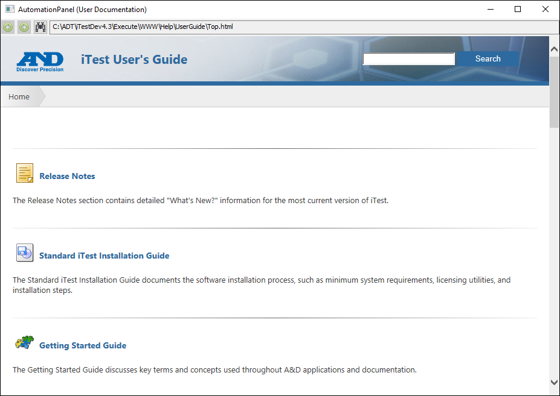

iTest User's Guide
iTest Getting Started Guide
Product Version 4.5
Prepared By
ADT Software Engineering
A&D Confidential Document Distributable only to A&D Customers
Copyright A&D Company, Limited
A&D Technology Inc.
The iTest Getting Started Guide details common terms used throughout the documentation.
A&D Technology is committed to leadership in technical support. A large, experienced staff is available for project engineering, planning, service, and support needs. For service questions about the A&D system or if a service problem occurs, please submit a support request using the customer portal at support.aanddtech.com.
During installation, you will be required to enter the serial number provided by A&D Technology. For information about how to install iTest, refer to the Standard iTest Installation Guide.
When first launching iTest, the Select Solution dialog displays. This dialog contains a list of solution and module folders found in the $SYSTEMDIR.
 |
NOTE: | The SelectSupport config.ini setting must be set to TRUE for the Select Solution dialog to display. |
For more information, refer to the Select Support documentation.
iTest macros enable you to refer to folder paths using a single consistent statement. The default macro paths are maintained in the config.ini file. These terms are used throughout the documentation to refer to different locations of the install directory.
iTest Macro Descriptions
| Term | Description | Example |
| $SYSTEMDIR | This is the folder where iTest is installed on the PC. | C:\ADT\iTest4.3\ |
| $SUPPORTDIR | This is the solution folder. | C:\ADT\iTest4.3\Solution.Demo\ |
| $DATADIR | This is the folder that contains all logged data. | C:\ADT\iTest4.3\Data\ |
| $EXECUTEDIR | This is the folder that contains iTest executable files and other binary files. | C:\ADT\iTest4.3\Execute\ |
| $PYTHONDIR | This is the folder that contains Python support files, including the supported libraries. | C:\ADT\iTest4.3\Execute\Python43\ |
iTest documentation consists of many detailed user guides. These documents provide instructions for configuring iTest to be suitable for your testing environment. iTest documentation is available as Online Help and as PDF documents.
After installing iTest, PDF documents can be accessed by navigating to the $SYSTEMDIR\Help folder. The Online Help can be accessed through various applications, including AutomationPanel, SolutionBuilder, Test Manager, and iTest Console.
Online Help Documentation

For information about various iTest topics and concepts, refer to the iTest Application Development Guide. For information about managing aspects of your iTest solution and debugging, refer to the Developer Tools guide.
General iTest Glossary Definitions
| Term | Description |
| $DATADIR | The default location for project data files (e.g., C:\ADT\iTestX.X\Data). |
| $EXECUTEDIR | This folder contains iTest executable files and other binary files (e.g., C:\ADT\iTestX.X\Execute). |
| $SUPPORTDIR | This is a solution folder (e.g., C:\ADT\iTestX.X\Solution.Demo). |
| $SYSTEMDIR | This is the folder where iTest is installed on the PC (e.g., C:\ADT\iTestX.X). |
| Addcalcs | This is a generic term referring to calculations. When referenced without a Hz rate, it is referring to the system rate calculations. |
| AnDRus | A standalone iTest application used to manage licenses and dongles for iTest. For more information, refer to the Updating a Dongle documentation. |
| Application | The standalone program to launch (e.g., iTest.exe). |
| Array | (Channel-based) Also referred to as a native array channel. A virtual output array or virtual string array channel that can store a collection of values or strings. (File-based) A file ending with the .ary file extension used to store a collection of values and strings that can be accessed during runtime using a set of dedicated VCL commands and functions. |
| AutomationPanel | A modern GUI for developing user interfaces for A&D Technology products. For more information, refer to the AutomationPanel Operators Guide. |
| Blackbox | A data recorder with a circular buffer used to record data at a user-defined rate and length of time. Data capture is event-driven (e.g., due to a limit violation). |
| Build | The process that recompiles VCL script, allowing for runtime changes without having to shutdown and restart iTest. This does not update shared memory. |
| C2V/V2C | A C2V file is generated by AnDRus.exe and is sent to A&D Technology for updating a dongle. A V2C file is the updated file sent to the user from A&D to complete the process for updating. For more information, refer to the Updating a Dongle documentation. |
| Calculation | A series of periodically calculated formulas and expressions. |
| Calibration | The process of adjusting the output or indication on a measurement instrument to agree with an applied standard within a specified accuracy. This is principally accomplished through the standalone Calibration application included with iTest. |
| Channel | This is used to represent inputs, outputs, timers, values, and strings. Channels are given a name and a set of attributes based on what it is to represent. They are used to build displays, write tests, develop scripts, define limits, and perform many other tasks. Channel value sources are derived from I/O modules, measurement devices, smart subsystems (e.g., battery cyclers or emission benches), or even calculations and VCL executed inside iTest. |
| Channel Assignment | The process of assigning a defined channel from a module to a channel in the Sys module. This allows for development of generalized displays, VCL, and more in the Sys module that can be used with a group of modules without modification. |
| Channel Definition | The stored set of attributes that define an iTest channel. |
| Channel Substitution | The use of macros to substitute channel names and values (e.g., %<channelname>%). When referencing array channels, the array index is specified through the use of magic brackets (e.g., %<channelname[index]>%). |
| Config.ini | The file that contains the configuration options that define the iTest application as a whole and its interactions with other A&D supplied software (e.g., LabCentral). |
| Data Log | An iTest generated file containing test data. This file includes a header data section in addition to the requested data points. |
| Data Quality | An internal runtime verification tool that enables you to define data quality limits for channels in your system. |
| Data_Engine | A mailslot destination used for performing functions. For more information, refer to the DataEngine Mailslot Messages List documentation. |
| Display | A user-designed graphical interface that provides controls and visual information tools based on a specific purpose. A layout is an example of a display. |
| Dongle | A small hardware device that plugs into the USB port of a laptop or computer. A&D dongles contain licensed driver information and data used to initialize and run iTest drivers and hardware. |
| DongleUtil | A standalone iTest application that allows you to view the dongle's features, licenses keys, and product numbers. For more information, refer to the DongleUtil documentation. |
| Double Precision | This is the use of twice the usual number of bits to represent a number, giving greater arithmetic accuracy, and it uses a floating-point number format. |
| Driver | Allows A&D-specific or third-party devices and systems to be integrated into iTest. |
| Dynamic Calculation | A calculation that runs independently and asynchronously to the real-time system. |
| Event Viewer | An iTest application that provides an interface for event-driven messaging to the user during runtime that is separate from the Softpanel and Operator Messages. |
| File Services | A standalone iTest application that provides specialized interaction with folders and files (e.g., copying a file or reading a data point from a data log). These mailslot commands are handled asynchronous to the real-time system. |
| FlexEdit | A standalone iTest application used by operators to complete a workflow of routine maintenance tasks and configuration tasks specific to the UUT during runtime. For more information, refer to the FlexEdit documentation. |
| GUI | A graphical user interface used to interact with the iTest application. This is also referred to as an interface. |
| Internal Variable | A special channel that does not have any attributes associated with it. |
| iTest Console | A software tool that supports operator screens used for controlling all major test cell functions and cell related activities. For more information, refer to the iTest Console Operators Guide documentation. |
| LabAgent | A tool central to the LabWorX environment that enables LabCentral to communicate with any data system that has a LabAgent agent installed. For more information, refer to the LabAgent User Guide. |
| LabCentral | An application used to view and configure LabCentral as well as to generate reports. LabCentral is installed on a server for data archival and retrieval for multiple test systems. This tool enables users to: - Add and monitor test systems through a web browser - Configure user security - Configure and generate utilization reports - Backup data and configuration settings - Access LabCentral dashboards from mobile devices - Access the LabCentral Weather Server (optional) For more information, refer to the LabCentral User Guide. |
| LabMinder | LabMinder is a coordinated lab monitoring system; it manages notifications and responses when events occur in a lab. For more information, refer to the LabMinder User Guide. |
| LabWorX | A group of products that work together to transform a collection of test systems into one managed lab. LabWorX products include LabCentral, LabMinder, LabApp, LabReporter, LabScheduler, LabAgent, and iViewBox. For more information, refer to the LabWorX documentation. |
| Layout | A container that you can use to add panels and configure the design of AutomationPanel's interface. |
| Limits | A range with a defined action that occurs when a channel's value crosses into that range. |
| Local Variable | A numeric or string variable that works like a channel for use within a running procedure. Their values are not inherently shared outside of the procedure that they are declared in. |
| Macro | A pointer to a string value that can be referenced throughout the application. This allows modifying the string value without having to update the references in iTest. |
| Mailer | A standalone iTest application used to send and receive commands and procedures in the form of mailslot messages as well as a debugging tool for testing purposes. |
| Mailslot Message | A message that asynchronously communicates instructions to designated mailslots. |
| Master Schedule | A tool for creating high-level sequences of instructions composed of schedules, procedures, and other master schedules. |
| Modularity | This refers to the ability within iTest to design portions of the solution as separate, standard entities (i.e., modules) that can be swapped in and out as needed based on the testing requirements, available equipment, and specimen. |
| Module | A collection of iTest configuration files that are designed to be added and removed from your solution as a named unit. |
| Module ID (MID) | The unique ID used for the module. Module IDs are also referred to by the "MID" abbreviation. |
| Panel | An object or collection of sub-objects that can be added to either a layout or a toolbar. These are used to define the controls and visual information tools within a display. |
| Patch | A set of one or more files that are used to update an iTest application or solution with new features or to address issues between version releases. |
| Picklist | A file that contains a list of values or strings that can be used to populate drop-down fields in display objects. |
| PID | A proportional integral derivative (PID) control is also known as a control loop. These stabilize a process or a device at a commanded setpoint by measuring an input value and adjusting an output value based on the derived error. |
| Powertek.ini | A file that contains a list of settings used to configure the solution, modify existing base functionality, or add new functionality in order to provide additional flexibility for core functions of the iTest software. |
| ProblemReport | A ZIP file that can be used to recreate the iTest environment that a test was run in. This file is typically transferred to A&D Technology to document a problem report, or it can be stored for reference. This can also refer to the standalone iTest application that is used to generate these ZIP files. |
| Python | A high-level, general purpose programming language used to supplement the functionality available from the VCL scripting language. |
| PythonEngine | A standalone iTest application that provides specialized interaction with Python packages and scripts. For more information, refer to the Automating iTest with Python documentation. |
| RDB | The real-time database is a key architectural feature of iTest; it is the area of memory where channel definitions are stored while iTest is running. |
| Real-time | This can be used to refer to a real-time operating system (e.g., INtime) or to a feature of VCL processing. In VCL, instructions can be structured in real-time, which prioritizes the instruction handling, and it also explicitly structures its execution based on the timestamp included on the VCL line. This is often referred to as "real-time VCL." |
| Rebuild | Stops all running procedures and calculations before compiling them again. |
| Runtime | The entire period of time that iTest is running. |
| Schedule | A test sequence as a series of steps. They may contain loops, nested loops, conditional actions, step tasks, and other special behavior. |
| Script | A series of instructions written using a high-level programming language that can be carried out by another program without the need for compiling. Examples include a VCL procedure or a Python script. |
| Softpanel | A mailslot destination used for user interactions. These mailslot messages are primarily used to interact with and modify the application's GUI, provide access to additional tools, or report information to the user. |
| Solution | A set of configuration files that define the framework for a given test automation application. |
| SolutionBuilder | An offline configuration tool for creating test environments. For more information, refer to the Introduction to SolutionBuilder documentation. |
| Step Tasks | An action that is executed when a certain condition is met while running a schedule. |
| System Scan Rate | The maximum tic speed for the iTest software environment. This affects the speed that VCL and calculations can be executed and data points logged. |
| Test | A series of instructions that are executed at runtime. These include schedules, master schedules, procedures, scripts, and more. |
| Test Manager | A software tool used to develop test configurations that are run on a test system during runtime. For more information, refer to the Introduction to Test Manager documentation. |
| VCL | The principal scripting language used by iTest. This is an acronym for "VX-In Control Language." For more information, refer to the VCL documentation. |
| VCL Command | A directive included in VCL that instructs iTest to perform a specific task. A VCL command that returns a value is referred to as a "VCL function." |
| VCL Function | Refers to either a VCL command or a user-defined VCL procedure. In both cases, a numeric or string value must be returned. |
| VCL Procedure | A series of instructions written using the VCL scripting language. For more information, refer to the VCL documentation. |
| VersionTool | A standalone iTest application that provides a listing of the iTest executable and binary files found in the $EXECUTEDIR and their version information, including the first level of the following subfolders: Panels, Dialogs, and Python34. |
The following matrixes detail the iTest to OS Compatibility, OS to RTOS Compatibility, RTOS to PC Compatibility, and the iTest Product Life cycle.
iTest to OS Compatibility Matrix
| iTest to OS Compatibility | Windows | Test Automation | |||||||||||||
|---|---|---|---|---|---|---|---|---|---|---|---|---|---|---|---|
| iTest 4.5 | iTest 4.4 | iTest 4.3 | iTest 4.2 | iTest 4.1 | iTest 4.0 | iTest 3.9 | iTest 3.8 | iTest 3.7 | iTest 3.6 | iTest 3.5 | iTest 3.4 | iTest 3.2 | iTest pre 3.2 | ||
| GUI OS | Windows 11 Pro |  |
|
|
|
X | X | X | X | X | X | X | X | X | X |
| Windows 10 Pro | |
|
|
|
|
|
|
|
|
X | X | X | X | X | |
| Win 7 Pro 64bit | X | X | X | X | X | |
|
|
|
|
|
|
X | X | |
| Windows XP | X | X | X | X | X | X | X | X | X | X | X | |
|
|
|
| RTOS | Xenomai | |
|
|
|
|
|
|
X | X | X | X | X | X | X |
| INtime 7.X | |
|
|
X | X | X | X | X | X | X | X | X | X | X | |
| INtime 6.3 | |
|
|
|
|
|
|
|
|
X | X | X | X | X | |
| INtime 5.2 | X | X | X | X | X | |
|
|
|
|
|
X | X | X | |
| INtime 4.2 | X | X | X | X | X | |
|
|
|
|
|
|
X | X | |
| INtime 3.13 | X | X | X | X | X | X | |
|
|
|
|
|
|
X | |
| VxWorks (VM4500) | X | X | X | X | X | X | X | X | X | X | |
|
|
|
|
| Legend | |||||||||||||||
| Supported | |
||||||||||||||
| Not Compatible | X | ||||||||||||||
OS to RTOS Compatibility Matrix
| OS to RTOS Compatibility | Windows | RTOS | ||||
|---|---|---|---|---|---|---|
| INtime 7.X | INtime 6.X | INtime 5.2 | INtime 4.2 | INtime 3.13 | ||
| Host OS | Windows 11 Pro | |
X | X | X | X |
| Windows 10 Pro | X | |
X | X | X | |
| Win 7 Pro 64bit | X | |
|
|
X | |
| Windows XP | X | O | O | O | |
|
| Legend | ||||||
| Supported | |
|||||
| Not Compatible | X | |||||
| Unsupported but should work | O | |||||
RTOS to PC Compatibility Matrix
| RTOS to PC Compatibility | Windows | RTOS | ||||
|---|---|---|---|---|---|---|
| INtime 7.X | INtime 6.X | INtime 5.2 | INtime 4.2 | INtime 3.13 | ||
| PC | HP 1HU (Quad core) | X | X | |
X | X |
| Dell 1HU | X | |
O | O | O | |
| Lite RT (Quad Core) | X | |
|
O | O | |
| Advantec i7 (6th gen Quad core) | X | |
X | X | X | |
| Advantec i7 (3rd gen Quad core) | X | X | X | |
X | |
| Advantec Core Duo (Dual Core) | X | X | X | X | |
|
| SuperLogics 2U i7 (12th gen 12 Core) | |
|
X | X | X | |
| Legend | ||||||
| Supported | |
|||||
| Not Compatible | X | |||||
| Unsupported but should work | O | |||||
iTest Product Life Cycle
| Product Version | Year | |||||||||||||||||
|---|---|---|---|---|---|---|---|---|---|---|---|---|---|---|---|---|---|---|
| 2008 | 2009 | 2010 | 2011 | 2012 | 2013 | 2014 | 2015 | 2016 | 2017 | 2018 | 2019 | 2020 | 2021 | 2022 | 2023 | 2024 | 2025 | |
| iTest 2.3 | |
|
|
O | O | O | O | O | X | X | X | X | X | X | X | X | X | X |
| iTest 3.0 | - | - | |
|
O | O | O | O | X | X | X | X | X | X | X | X | X | X |
| iTest 3.1 | - | - | - | |
|
|
O | O | O | X | X | X | X | X | X | X | X | X |
| iTest 3.2 | - | - | - | - | |
|
|
O | O | O | X | X | X | X | X | X | X | X |
| iTest 3.4 | - | - | - | - | - | - | |
|
O | O | O | X | X | X | X | X | X | X |
| iTest 3.5 | - | - | - | - | - | - | - | |
|
O | O | O | X | X | X | X | X | X |
| iTest 3.6 | - | - | - | - | - | - | - | - | |
|
O | O | O | X | X | X | X | X |
| iTest 3.7 | - | - | - | - | - | - | - | - | - | |
|
O | O | O | X | X | X | X |
| iTest 3.8 | - | - | - | - | - | - | - | - | - | - | |
|
O | O | O | X | X | X |
| iTest 3.9 | - | - | - | - | - | - | - | - | - | - | - | |
|
O | O | O | X | X |
| iTest 4.0 | - | - | - | - | - | - | - | - | - | - | - | - | |
|
O | O | O | X |
| iTest 4.1 | - | - | - | - | - | - | - | - | - | - | - | - | - | |
|
O | O | O |
| iTest 4.2 | - | - | - | - | - | - | - | - | - | - | - | - | - | - | |
|
O | O |
| iTest 4.3 | - | - | - | - | - | - | - | - | - | - | - | - | - | - | - | |
|
O |
| iTest 4.4 | - | - | - | - | - | - | - | - | - | - | - | - | - | - | - | - | |
|
| iTest 4.5 | - | - | - | - | - | - | - | - | - | - | - | - | - | - | - | - | - | |
| Legend | ||||||||||||||||||
| Current Version | |
|||||||||||||||||
| Bugfix Only | O | |||||||||||||||||
| Not Supported | X | |||||||||||||||||
| Not Available | - | |||||||||||||||||